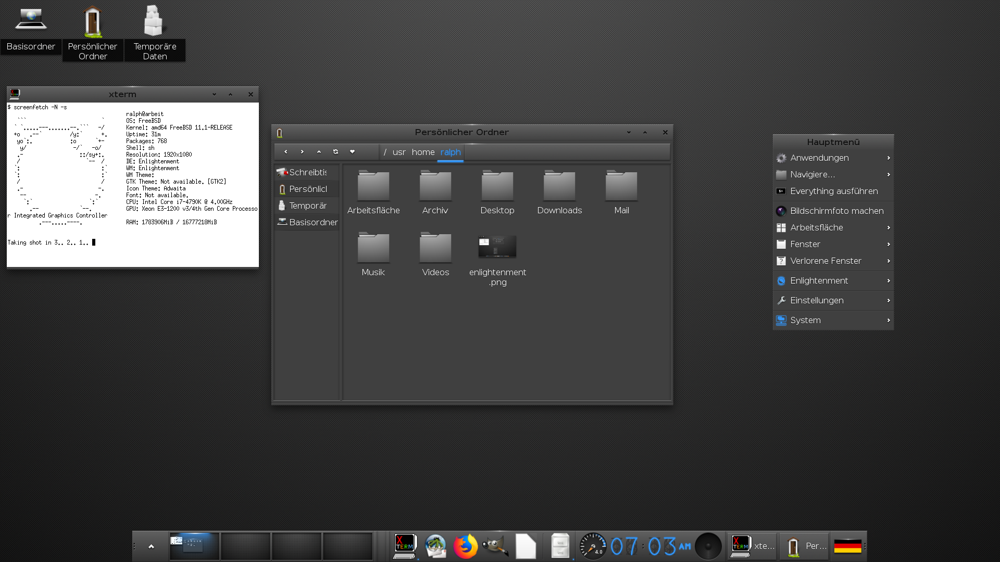

1.142. Windowmanager
Dieses HowTo behandelt die Installation und die Konfiguration diverser Windowmanager.
1.142.1. Was ist ein Windowmanager
Windowmanager haben die Aufgabe, den Anwendungsprogrammen das Verschieben, Minimieren, Vergrößern und Schließen von Fenstern zu ermöglichen. Neben diesen Funktionen zeichnet ein Windowmanager noch die Dekoration um die Fenster, wie etwa die Leiste mit dem Titel oder eine äußere Umrandung.
Einige Windowmanager bieten noch die Unterstützung für D-Bus, Docks, Panel, Programmstarter, Icons auf dem Desktop, optische Designs und Hintergrundbilder. Voll ausgebaut haben sie eine ähnliche Funktionalität wie komplette Desktop-Umgebungen. Die meisten Fenstermanager können mit der Maus bedient oder mit der Tastatur angesteuert werden.
Auch Desktop-Umgebungen benötigen Windowmanager, bei KDE etwa Kwin, bei Gnome 3 ist es Mutter.
Die einfachen Windowmanager unterscheiden sich jeweils durch ihre unterschiedliche Erweiterbarkeit, der Art und Weise der Bedienung sowie durch ihre Art und ihr Design, Fenster darzustellen.
1.142.2. Warum Windowmanager
Wann ist der Einsatz von Windowmanagern sinnvoll?
Wem komplette Desktop Umgebungen wie KDE oder Gnome mit ihren zahlreichen standardmäßig mitinstallierten Diensten zu umfangreich sind und er es eher puritanisch und übersichtlich liebt, für diese Individualisten gibt es als resourcensparende Alternative die sogenannten Windowmanager. Sie sind schnell installiert, brauchen nur wenig Arbeitsspeicher und sind auch auf älteren Rechnern durchaus performant.
1.142.3. Auswahl Windowmanager
1.142.4. twm
1.142.4.1. Beschreibung
twm (für Tom’s Window Manager oder Tab Window Manager) ist ein Windowmanager für das X Window System. Vorteile sind seine geringe Größe (circa 140 KB) und seine Stabilität. Im Vergleich zu den meisten anderen Windowmanagern ist sein Funktionsumfang minimalistisch, weil twm sich ausschließlich auf die Verwaltung von Fenstern beschränkt und nicht versucht, eine Schnittstelle für Funktionen des Betriebssystems darzustellen.
Auch wenn er heute meist nur noch genutzt wird, wenn kein anderer Window Manager zur Verfügung steht, gibt es immer noch eine kleine Gruppe an Benutzern, die twm dank seiner Einfachheit, Erweiterbarkeit und Leichtgewichtigkeit schätzen – nicht zuletzt auch deshalb, weil er direkt in der Programmiersprache C geschrieben ist und nur die Kernfunktionen der Xlib benutzt, statt ein umfangreiches GUI-Toolkit wie GTK+ oder Qt zu nutzen.
Bei der X.Org-Referenzimplementierung des X Window Systems ist der twm noch immer der standardmäßige Windowmanager und auch bei vielen anderen Implementierungen dabei. twm ist freie Software und steht unter der MIT-Lizenz (auch „X11-Lizenz“ genannt, um Verwechslungen mit anderen Lizenzen des MIT zu verhindern).
Quelle: Wikipedia
1.142.4.2. Geschichte
1987 schrieb Tom LaStrange die erste twm-Version aus Frustration über den damaligen Standard-WIndowmanager uwm. twm ist damit einer der ältesten Windowmanager. Seit X11R4 (1989) ist er der Standard-Windowmanager für das X-Window-System und läuft dadurch auf jedem System, auf dem X11 installiert ist.
Quelle: Wikipedia
1.142.4.3. Beschaffung und Installation
Aus den Ports :
# cd /usr/ports/x11-wm/twm
Als fertiges Binärpaket : ist durch die Grundinstallation von FreeBSD mit dem Paket xorg bereits vorhanden.
1.142.4.4. Konfiguration
Die globale Konfigurationsdatei system.twmrc befindet sich im Ordner /usr/local/share/X11/twm/system.twmrc.
Wir kopieren die system.twmrc in unser Home Verzeichnis und benennen sie um in .twmrc.
Nun können wir die .twmrc mit einem Editor unserer Wahl editieren und unseren Wünschen gemäß anpassen.
1.142.4.5. Start
Wenn wir ohne Loginmanager arbeiten und X mit startx von der Konsole starten, müssen wir im Homeverzeichnis eine .xinitrc erstellen und tragen dort folgendes ein:
exec twm
Wenn ein Desktopsystem wie KDE installiert wird und der Loginmanager kdm benutzt wird, wird automatisch eine twm.desktop Datei erstellt in
/usr/local/share/apps/kdm/sessions. Twm taucht dann automatisch im Auswahlmenu des KDM Loginmanagers von KDE auf.
Bemerkung
Dieser Windowmanager spielt in der Praxis kaum noch eine Rolle, wird aber aus historischen Gründen mitaufgeführt.
1.142.4.6. Screenshot
1.142.5. mwm
1.142.5.1. Beschreibung
Der Motif Window Manager (mwm) ist ein in die Jahre gekommener Dinosaurier und Urahn aller Fenster-Manager unter UNIX-Systemen. Ursprünglich kommerziell, ist er mittlerweile freigegeben in dem Paket openmotif vorhanden. Er zeichnet sich dadurch aus, dass er keinerlei Hintergrundprozesse startet. Der mwm ist somit auch für langsame Rechner bestens geeignet. Er stellt eine Iconbox bereit, der Bildschirm sieht somit immer aufgeräumt aus.
1.142.5.2. Geschichte
Motif ist nicht nur ein Window-Manager sondern in erster Linie ein Toolkit zur Erstellung graphischer Benutzeroberflächen mit X11. Dieses Toolkit wurde bereits in den frühen 90er Jahren zum De-Facto-Standard für kommerzielle X-Applikationen und somit auch der Motif-Window-Manager, kurz mwm, auf den meisten UNIX-Varianten. Der Original-Source-Code, eingefroren auf Version 2.1.30, steht nach wie vor unter der Ägide der Open Group und ist gebührenpflichtig. Der Source Code dieser Version wurde von der Open Group unter der Bezeichnung Open Motif eingeschränkt freigegeben.
1.142.5.3. Beschaffung und Installation
Aus den Ports:
# cd /usr/ports/x11-toolkits/open-motif
# make install clean
Als fertiges Binärpaket:
# pkg install open-motif
1.142.5.4. Konfiguration
Die globale Konfigurationsdatei system.mwmrc befindet sich im Ordner /usr/local/lib/X11/system.mwmrc.
Wir kopieren die system.mwmrc in unser Home Verzeichnis und benennen sie um in .mwmrc.
Nun können wir die .mwmrc mit einem Editor unserer Wahl editieren und unseren Wünschen gemäß anpassen.
1.142.5.5. Start
Wenn wir ohne Loginmanager arbeiten und X mit startx von der Konsole starten, müssen wir im Homeverzeichnis eine .xinitrc erstellen und tragen dort folgendes ein:
exec mwm
Eine komplette typische .xinitrc sieht wie folgt aus:
export LANG=de_DE.UTF-8
setxkbmap de
exec mwm
1.142.5.6. Screenshot
1.142.6. fvwm
1.142.6.1. Beschreibung
FVWM (F Virtual Window Manager) ist ein freier, ICCCM-konformer und modularer Fenstermanager für das X Window System.
Hauptmerkmale von FVWM sind die umfangreiche und vielfältige Konfigurierbarkeit des Fensterverwalters über Konfigurationsdateien und die Verwendung von virtuellen Arbeitsplätzen. Viele aktuelle Fensterverwalter sind mit FVWM verwandt, unter anderem AfterStep, Xfce oder Enlightenment.
1.142.6.2. Geschichte
Robert Nation beschloss im Juli des Jahres 1993, sich genauer mit dem damals allgegenwärtigen Twm zu beschäftigen, da ihn TWM bei der Analyse akustischer Signaturen für das Verteidigungsministerium der Vereinigten Staaten zu sehr einschränkte.
Unter anderem fand er heraus, warum der TWM soviel Speicher in Anspruch nahm und wie man sog. virtuelle Arbeitsoberflächen realisiert und implementiert.
Damals schon bekannt für seinen Terminalemulator rxvt, arbeitete Rob Nation an der Verminderung des Speicherverbrauchs seines neuen Fensterverwalters. Neugierig auf die Reaktion der Gemeinde verband er den FVWM mit einem neuen rxvt-Release. Da viele Benutzer die Umständlichkeiten und die Einschränkungen des TWM leid waren, kam ihnen eine vernünftige Alternative gerade recht.
1994 verließ Nation das Projekt; er ernannte Charles Hines zum Verantwortlichen. Nations letztes Release war fvwm-1.24r. Aufgrund der völligen Neugestaltung der Architektur nach Nations Weggang und den daraus resultierenden Inkompatibilitäten zwischen den Konfigurationsdateien der alten und neuen Generationen bieten viele Linux-Distributionen beide Generationen des FVWM parallel an. Da (im Jahr 2005) fvwm-1.24r auf modernen Linuxsystemen immer noch ohne Probleme kompiliert und ausgeführt werden kann, gibt es immer noch eine kleine Anzahl von Benutzern, die dieses ältere FVWM-Release verwenden.
1.142.6.3. Beschaffung und Installation
Aus den Ports:
# cd /usr/ports/x11-wm/fvwm
# make install clean
Als fertiges Binärpaket:
# pkg install fvwm
1.142.6.4. Konfiguration
Die globale Konfigurationsdatei system.fvwm2rc befindet sich im Ordner /usr/local/etc/system.fvwm2rc Wir kopieren die system.fvwm2rc in unser Home Verzeichnis und benennen sie um in .fvwm2rc.
Nun können wir die .fvwm2rc mit einem Editor unserer Wahl editieren und unseren Wünschen gemäß anpassen.
Wir machen eine Sicherheitskopie, falls wir bei unseren Änderungen Fehler machen sollten.
Bemerkung
Hier werden nur einige grundsätzliche Anpassungen besprochen. Für weitergehende Konfigurationsmöglichkeiten sind daher stets die Manpage zu konsultieren. Der Fenstermanager fvwm ist hochkonfigurierbar und unbegrenzt erweiterbar.
Als erstes laden wir die Konfigurationsdatei .fvwm2rc in einen Editor unserer Wahl.
Änderung und Anpassung der Fonts
Die Änderung des globalen Fonts für das Menü habe ich auf die Schriftgröße 12 geändert.
Wir gehen dazu zu dem Abschnitt #fonts - DefaultFont und editieren diese Zeile:
"StringEncoding=UTF-8:xft:sans-serif:encoding=iso10646-4:size=10;-misc-*-medium-r-semicondensed-*-13-*-*-*-*-*-iso10646-1"
Hier habe ich die Schriftgröße auf size=12 gesetzt.
Änderung und Anpassung der Schriftgröße für die IconFonts
"StringEncoding=UTF-8:xft:sans-serif:encoding=iso10646-4:size=8;-misc-fixed-medium-r-normal-*-10-*-*-*-*-*-iso10646-1"
Hier habe ich die Schriftgröße auf size=10 gesetzt.
Änderung und Anpassung des Menus
Wir suchen den Bereich WorkMenu
AddToMenu WORK_MENU_popup "Work Menu" Title
+ "xterm" Exec exec xterm
+ "Firefox" Exec exec firefox
+ "Mail" Exec exec claws-mail
+ "Dateimanager" Exec exec pcmanfm
und passen diese Zeilen unseren Bedürfnissen an.
Änderung und Anpassung der Styles und des Click Verhaltens
von
Style * SloppyFocus
auf
Style * ClickToFocus
Hier wrd die Fensterpositionierung konfiguriert:
# Style * SmartPlacement, RandomPlacement, ActivePlacement
Style * SmartPlacement, RandomPlacement
Style * NoPPosition
Wallpaper ändern oder deaktivieren
Hier werden auch Autostart Funktionen konfiguriert
Es wird automatisch xterm gestartet
Es wird kein Hintergrundbild geladen
Dafür wird der Hintergrund mit SteelBlue gezeichnet
xsetroot -solid SteelBlue
AddToFunc StartFunction
+ I Test (Init) Module FvwmBanner
+ I Exec exec xsetroot -solid SteelBlue
+ I Test (Init) Exec exec xterm -ls -geometry +150+85
# + I Test (Init) Exec exec xli -onroot -fillscreen -border black #/usr/share/wallpapers/default-1600x1200.jpg
+ I Module FvwmButtons
Pfad für pixmaps
/usr/local/share/fvwm/pixmaps
sollte auch in der .fvwm2rc eingetragen sein oder werden:
ImagePath /usr/local/share/fvwm/pixmaps
Eine wichtige Anlaufstelle ist auch www.fvwm.org
Dort ist alles dokumentiert und es gibt auch viele Screenshots, zum Teil auch mit herunterladbarer Konfigurationsdatei.
1.142.6.5. Start
Wenn wir ohne Loginmanager arbeiten und X mit startx von der Konsole starten, müssen wir im Homeverzeichnis eine .xinitrc erstellen und tragen dort folgendes ein:
exec fvwm.
Eine komplette typische .xinitrc sieht wie folgt aus:
export LANG=de_DE.UTF-8
setxkbmap de
exec fvwm
1.142.6.6. Screenshot
1.142.7. Windowmaker
1.142.7.1. Beschreibung
Der Window Maker (kurz wmaker) ist ein von Alfredo Kojima geschriebener Fenstermanager für das X Window System.
Vom Design ist er an OPENSTEP angelehnt und als Verbesserung von AfterStep gedacht. Er bietet ein funktionales Äußeres mit umfangreichen Konfigurationsmöglichkeiten bei geringer RAM- und CPU-Belastung.
Window Maker ist der bevorzugte Fenstermanager für GNUstep, obwohl Window Maker selbst WINGs („WINGs is not GNUstep“) verwendet.
Auch KDE- und Gnome-Anwendungen können unter Window Maker ausgeführt werden.
Window Maker kommt mit einem eigenen grafischen Kontrollzentrum daher und läßt sich daher schnell und einfach an die persönlichen Bedürfnissen anpassen.
1.142.7.2. Geschichte
Die Mac-OS-X-Bedienphilosophie erfreut sich auch auch heute noch einiger Beliebtheit. Window Maker ist als Nachbau der Oberfläche von „NeXTStep“ konzipiert, ein System, das Apple kaufte und als Grundlage für die Entwicklung des späteren Mac OS X nahm. Window Maker hat sich in den nunmehr über 20 Jahren seines Bestehens nicht wesentlich verändert, wird aber nach einer Pause von ein paar Jahren wider aktiv weiter entwickelt.
Die Oberfläche strahlt etwas sehr archaisches, individuelles aus, ist aber technisch sehr wohl auf der Höhe der Zeit.
1.142.7.3. Beschaffung und Installation
Aus den Ports:
# cd /usr/ports/x11-wm/windowmaker
# make install clean
Als fertiges Binärpaket:
# pkg install windowmaker
1.142.7.4. Konfiguration
1.142.7.5. Start
Wenn wir ohne Loginmanager arbeiten und X mit startx von der Konsole starten, müssen wir im Homeverzeichnis eine .xinitrc erstellen und tragen dort folgendes ein:
exec wmaker
Eine komplette typische .xinitrc sieht wie folgt aus:
export LANG=de_DE.UTF-8
setxkbmap de
exec wmaker
1.142.7.6. Screenshot
1.142.8. Fluxbox
1.142.8.1. Beschreibung
Fluxbox ist ein Fenstermanager für das X Window System in unixoiden Betriebssystemen. Der Fokus der Entwickler liegt auf einem möglichst sparsamen Umgang mit Betriebsmitteln und einer tiefgehenden Konfigurationsmöglichkeit.
Trotz seiner Schlichtheit kann Fluxbox stark auf die persönlichen Bedürfnisse angepasst werden. Die Fenster von Programmen mit grafischer Oberfläche können in ihrem Verhalten, Aussehen und ihrer Größe detailreich konfiguriert und gar zu einer Einheit zusammengefasst werden (ähnlich wie beim Tabbed Browsing), unabhängig davon, ob das jeweilige Programm dies unterstützt oder nicht. Weitere Möglichkeiten zur Anpassung, wie das Festlegen von Tastenkombinationen, das Bearbeiten der Menüs oder das Entwerfen neuer Desktop-Designs sind ebenfalls vorhanden. Sämtliche Einstellungen werden über Konfigurationsdateien vorgenommen, die Plain text enthalten und mit gewöhnlichen Texteditoren bearbeitet werden können.
Die Entwickler fokussieren sich sowohl auf eine übersichtlich gestaltete Oberfläche als auch auf eine möglichst ressourcenschonende Arbeitsweise. So zeichnet sich Fluxbox durch eine geringe Auslastung von Arbeitsspeicher und Hauptprozessor, sowie einen geringeren Bedarf an Speicherplatz auf der Festplatte aus. Erzielt wird dies durch den bewussten Verzicht auf aufwändig gestaltete Grafiken, Animationen oder andere Eigenschaften, welche die Systemauslastung steigern würden. Die Verwendung von Fluxbox kann deshalb besonders für den Einsatz auf leistungsschwachen Systemen wie älteren Computern oder Live-Systemen vorteilhaft sein. Die Distribution Damn Small Linux verwendet Fluxbox standardmäßig. Auch von Ubuntu gab es mit Fluxbuntu und Linux Mint Fluxbox speziell für Fluxbox gestaltete Derivate.
1.142.8.2. Geschichte
Fluxbox ging als Abspaltung aus Blackbox hervor und ist mit diesem von Konfiguration und Handhabung her zu einem großen Teil identisch.
1.142.8.3. Beschaffung und Installation
Aus den Ports:
# cd /usr/ports/x11-wm/fluxbox
# make install clean
Als fertiges Binärpaket:
# pkg install fluxbox
1.142.8.4. Konfiguration
Um bereits installierte Anwendungen ins fluxbox Menu automatisch einzubinden, installieren wird das Paket menumaker.
# pkg install menumaker
Wir starten das Python Script in der Konsole mit
# mmaker -f fluxbox
Es wird automatisch eine Menudatei menu generiert im Ordner .fluxbox unseres Homeverzeichnisses, das mit bereits installierten Anwendungen befüllt wird. Sie kann jederzeit mit einem Texteditor unserer Wahl an unsere eigenen Bedürfnisse angepaßt werden.
Beispiel:
Wir laden die .fluxbox/menu in einen Editor unserer Wahl und fügen an den Anfang nach
[begin] (FluxBox)
folgende Zeilen ein:
[exec] (Terminal) {xterm}
[exec] (Mail) {claws-mail}
[exec] (Browser) {firefox}
[exec] (Dateimanager) {pcmanfm}
[separator]
1.142.8.5. Start
Wenn wir ohne Loginmanager arbeiten und X mit startx von der Konsole starten, müssen wir im Homeverzeichnis eine .xinitrc erstellen und tragen dort folgendes ein:
exec startfluxbox
Eine komplette typische .xinitrc sieht wie folgt aus:
export LANG=de_DE.UTF-8
setxkbmap de
exec startfluxbox
1.142.8.6. Screenshot
1.142.9. IceWM
1.142.9.1. Beschreibung
IceWM ist ein in C++ programmierter, unter LGPL stehender Fenstermanager für das X11-Fenstersystem. Er ist ein resourcensparender, performanter Windowmanager, der durch seine Einfachheit und unkomplizierte Konfiguration besticht. Er glänzt auch durch seine Themenvielfalt.
1.142.9.2. Geschichte
IceWM wurde bereits 1997 von Marko Macek präsentiert, der seinen Fenstermanager nach wie vor weiterentwickelt. Sein Ziel lag dabei auf eine hohe Geschwindigkeit, Einfachheit und Benutzerfreundlichkeit. Als minimale Hardwarevoraussetzung nennt die Homepage einen 386-Prozessor, wie er Ende der 80er Jahre aktuell war. IceWM läuft folglich auf jedem Rechner, auf dem eine grafische Oberfläche in Form des X Window Systems startet.
Bereits seit Ende der neunziger Jahre des letzten Jahrtausends in Entwicklung, erlangte IceWM durch die Vorinstallation auf den ersten Asus Eee PCs ab 2007 größere Verbreitung.
1.142.9.3. Beschaffung und Installation
Aus den Ports:
# cd /usr/ports/x11-wm/icewm
# make install clean
Als fertiges Binärpaket:
# pkg install icewm
1.142.9.4. Konfiguration
Um bereits installierte Anwendungen ins Icewm Menu automatisch einzubinden, installieren wird das Paket menumaker.
# pkg install menumaker
Wir starten das Python Script in der Konsole mit
# mmaker -f icewm
Es wird automatisch eine Menudatei menu generiert im Ordner .icewm unseres Homeverzeichnisses, das mit bereits installierten Anwendungen befüllt wird. Sie kann jederzeit mit einem Texteditor unserer Wahl an unsere eigenen Bedürfnisse angepaßt werden.
Im Menu unter Settings - Motive kann das Theme gewechselt werden. Es stehen eine Vielfalt von unterschiedlichen Themen wie Motif oder win95 für die Liebhaber klassischer Designs zur Verfügung.
1.142.9.5. Start
Wenn wir ohne Loginmanager arbeiten und X mit startx von der Konsole starten, müssen wir im Homeverzeichnis eine .xinitrc erstellen und tragen dort folgendes ein:
exec icewm-session
Eine komplette typische .xinitrc sieht wie folgt aus:
export LANG=de_DE.UTF-8
setxkbmap de
exec icewm-session
1.142.9.6. Screenshot

1.142.10. Openbox
1.142.10.1. Beschreibung
Openbox ist ein sehr stabiler und schneller Fenstermanager. Er zeichnet sich durch seine seine hohe Anpassungsfähigkeit und einen geringen Ressourcen-Bedarf aus und eignet sich daher hervorragend auch für leistungsschwächere Rechner. Openbox ist der Standard-Fenstermanager der Desktop-Umgebungen LXDE bzw. LXQt. Auch verschiedene unixiode Linux Varianten setzen ebenfalls auf Openbox.
Openbox ist keine vollständige Desktop Umgebung, er bringt weder ein Panel noch andere Erweiterungen mit. Openbox kann aber durch viele sinnvolle Zusatztools aufgewertet werden. Openbox beinhaltet ein Auswahlmenü, ähnlich dem, das die meisten Desktop-Umgebungen bei Klick auf die Taskleiste zu Verfügung stellen. Mit diesem vollständig konfigurierbaren Menü kann man Openbox beenden oder die nach Gruppen gegliederten Programme starten.
1.142.10.2. Geschichte
Ursprünglich wurde Openbox vom X-Fenstermanager Blackbox abgeleitet. Blackbox wurde 1997 als ein leichter X Window-Manager entwickelt und wurde vollständig im Original-Code von C++ geschrieben. Zusammen mit Blackbox 0.65 wurde Openbox ausgegliedert und komplett in C geschrieben.
Openbox, derzeit in der Version 3.4, ist seit der Version 3.0 völlig frei von jeglichem Blackbox-Code. Das Openbox-Projekt wurde in erster Linie von Dana Jansens von der Carleton University in Ottawa, Ontario, Kanada geschrieben. Openbox dient auch als Fenstermanager für die LXDE Desktop-Umgebung.
Das Projekt startete 2002, für Version 3 wurde Openbox komplett neu geschrieben, lehnt sich jedoch immer noch an das Aussehen von Blackbox an.
1.142.10.3. Beschaffung und Installation
Aus den Ports:
# cd /usr/ports/x11-wm/openbox
# make install clean
Als fertiges Binärpaket:
# pkg install openbox
Es empfiehlt sich, die grafischen Konfigurations-Tools obconf und obmenu mit zu installieren.
Mit dem Programm obconf kann das Design und Verhalten von Openbox konfiguriert werden.
Aus den Ports:
# cd /usr/ports/x11-wm/obconf
# make install clean
Als fertiges Binärpaket:
# pkg install obconf
Mit obmenu wird das Kontextmenü, (was mit der rechten Maustaste aufgerufen wird) den eigenen Bedürfnissen und Workflow angepasst. Obmenu kann nicht nur einzelne Programmstarter erstellen, sondern auch Untermenüs erzeugen.
Aus den Ports:
# cd /usr/ports/x11-wm/obmenu
# make install clean
Als fertiges Binärpaket:
# pkg install obmenu
1.142.10.4. Konfiguration
Zum Konfigurieren von Openbox gibt es ein Hilfsprogramm namens ObConf, den Openbox Configuration Manager.
Ungewöhnlich ist die Konfiguration des Fenstermanagers durch XML-Dateien. ICCCM und EWMH werden ebenso unterstützt wie die Arbeit mit mehreren Monitoren gleichzeitig durch Xinerama.
Durch Bearbeiten von nur drei Dateien kann man ihn an die eigenen Vorlieben anpassen. Es gibt aber auch Programme, mit denen man Einstellungen und Menüs grafisch konfigurieren kann.
Nach der Installation und dem ersten Start von Openbox befinden sich die globalen XML Konfigurationsdateien im Ordner /usr/local/etc/xdg/openbox/. Wir kopieren den gesammten Inhalt des Ordners /usr/local/etc/xdg/openbox/ in unser Homeverzeichnis nach ~/.config/openbox. Dieser Ordner im Homeverzeichnis wurde bereits nach dem ersten Start von Openbox automatisch angelegt. Dabei werden vorhandene Dateien überschrieben. Wir sorgen dafür, das diese Dateien gelesen und beschrieben/geändert werden können.
Wir starten den Openbox Konfigurationsmanager, um Aussehen und Design zu ändern
{kind=link}
Option |
Wirkung |
|---|---|
Theme |
Themenauswahl (Fensterdekoration, Farben) |
Appearance |
Schriftarten und Layout der Titelzeile eines Fensters |
Windows |
spezielle Fensterfunktionen |
Move und Resize |
Verhalten bei Positions- und/oder Größenänderung eines Fensters |
Mouse |
Fensterfokus und Verhalten beim Doppelklick der Titelzeile |
Desktops |
Anzahl der virtuellen Desktops |
Margins |
Verhalten der Randbereiche des Desktops |
Dock |
zusätzliche Symbol-/Programmleiste |
Nun können wir die menu.xml mit dem Konfigurationstool obmenu editieren und unseren Wünschen gemäß anpassen.
{kind=link}
1.142.10.5. Wallpaper einrichten
Wir installieren feh, um ein Wallpaper unserer Wahl anzuzeigen.
# pkg install feh
feh wird in der autostart Datei gestartet (siehe Autostart).
1.142.10.6. Autostart
Der Fenstermanager Openbox kommt in der Standard Ausführung ziemlich spartanisch daher. Deshalb erweitern wir ihn durch zusätzliche nützliche Tools und Funktionen. Diese werden werden im Homeverzeichnis im Ordner ./config/openbox in die Datei autostart eingetragen.
Eine typische autostart Konfiguration sieht wie folgt aus:
tint2 &
volumeicon &
compton &
xterm -fa 'Mono' -fs 11 -geometry +20+20 &
xclock -geometry 200x200-50+50 &
feh /home/ralph/Archiv/Images/bsd.png
tint2 versorgt Openbox mit einem Panel.
volumeicon ist ein Lautstärkeregler.
compton ist ein Compositmanager für Schattenwurf und Transparenz.
Wir positionieren das Terminal xterm in der Schrift Mono und der Schriftgröße 11 und bestimmen den Ort mit der geometrie.
Wir positionieren eine analoge Uhr und bestimmen den Ort mit der geometrie.
Mit feh wird ein Wallpaper geladen und angezeigt.
1.142.10.7. Weitere Tools und Erweiterungewn
1.142.10.8. Start
Wenn wir ohne Loginmanager arbeiten und X mit startx von der Konsole starten, müssen wir im Homeverzeichnis eine .xinitrc erstellen und tragen dort folgendes ein:
exec openbox-session
Eine komplette typische .xinitrc sieht wie folgt aus:
export LANG=de_DE.UTF-8
setxkbmap de
exec openbox-session
1.142.10.9. Fazit
Openbox macht Sinn und ist daher empfehlenswert, wenn konsequent auch leichtgewichtige Software wie
pcmanfm als Dateimanager
leafpad als Texteditor
gpicview als Bildbetrachter
mupdf als PDF Betrachter
xfburn als CD Brennprogramm
hinzuinstalliert und benutzt wird. Der Geschwindigkeitsvorteil ist unter anderem dadurch begründet, weil keinerlei zusätzliche Dienste automatisch gestartet werden und keine Abhängigkeiten den Speicherbedarf unnötig vergrößern und aufblähen. Openbox kann mit zusätzlichen Tools aufgewertet werden bis zu einem vollwertigen Desktop. Die große Flexibilität ist eines der großen Stärken von Openbox.
1.142.10.10. Screenshot
1.142.11. Enlightenment
1.142.11.1. Beschreibung
Enlightenment (meist kurz mit E bezeichnet), zu deutsch „Erleuchtung“, ist eine freie Desktop-Umgebung für X sowie Wayland, die 1997 von Carsten Haitzler ins Leben gerufen wurde. Die erste Version war ein Hack des bekannten Window Managers FVWM und hieß Fvwm-XPM (Rastermans FVWM). Im Laufe der Zeit ist die Zahl der Komponenten und der Funktionsumfang so weit angewachsen, dass nun nicht mehr ein bloßer Fenstermanager, sondern eine vollwertige Desktop-Umgebung vorliegt.
1.142.11.2. Geschichte
Enlightenment wurde in der Folge jedoch als eigenständiges System entwickelt und erfreute sich lange Zeit großer Beliebtheit wegen seiner hohen Konfigurierbarkeit im Vergleich zu den damals gebräuchlichen Systemen wie TWM oder FVWM. Mit der im Oktober 1999 veröffentlichten Version 0.16[3] (auch als E16 oder DR16 bezeichnet) erreichte er seine größte Stabilität und Verbreitung (unter anderem als Unterbau für Gnome 1). Im Laufe der folgenden Jahre schien die Entwicklung einzuschlafen, und es wurden nur noch Bugfixes veröffentlicht. Während sich Haitzler auf eine Neuentwicklung konzentrierte, übernahm im Jahr 2003 mit der Veröffentlichung von DR16.6 Kim „kwo“ Woelders die Pflege des DR16-Zweiges.
Haitzlers Designziel mit der Version 0.17 (auch E17 oder DR17) ist es, Enlightenment so konfigurierbar wie nur möglich in den Bereichen Aussehen und Bedienung zu gestalten. Enlightenment besitzt neben der Fensterverwaltung auch einen eingebauten Dateimanager und mehrere unter dem Namen Enlightenment Foundation Libraries (EFL) zusammengefasste Funktionsbibliotheken.
Lange Zeit war der in Entwicklung befindliche Nachfolger E17 nur in einer Alpha-Version im CVS zum freien Herunterladen freigegeben. Im November 2009 wurde bekannt, dass der Elektronikkonzern Samsung die Entwicklung von Enlightenment unterstützen will, um das Programm in eigenen Produkten einzusetzen.[4] Im November 2010 stellte Electrolux (Frigidaire) in erstmaliger Kooperation mit ProFUSION einen Kühlschrank vor, dessen embedded System mit den EFL Libraries betrieben wird.[5]
Das erste E17-Release (ZERO) erschien am 21. Dezember 2012.
Es ist in den offiziellen Paketquellen von Arch Linux, Debian, Fedora, Gentoo, OpenSUSE, PCLinuxOS, Sabayon Linux, Ubuntu und Void Linux vorhanden. Es war der Standard-Desktop in Bodhi Linux, welches jetzt Moksha verwendet, einen Fork von E17.
Mit der Version E20 wurde die Unterstützung für Wayland und FreeBSD ausgebaut. Auch wurden viele interne Widgets mit Elementary ersetzt. Der Desktop bekam eine neue Mixer-Infrastruktur sowie ein überarbeitetes Audio-Gadget. Eine weitere Änderung ist die neue Screen-Management-Infrastruktur.
1.142.11.3. Beschaffung und Installation
Aus den Ports:
# cd /usr/ports/x11-wm/enlightenment
# make install clean
Als fertiges Binärpaket:
# pkg install enlightenment
1.142.11.4. Konfiguration
Nach dem ersten Start von Enlightenment öffnet sich ein Konfigurationsmanager, der eine grundlegende Basiseinstellung der Sprache, Tastatur, Größe der verwendeten Schriftart und Widgets sowie die Aktivierung/Deaktivierung des Composit abfragt. Diese Einstellungen sowie das Feintuning aller verwendeten Module lassen sich zu jeder Zeit nachträglich ändern. Enlightenment ist hochkonfigurierbar und läßt keine Wünsche offen.
1.142.11.5. Start
Wenn wir ohne Loginmanager arbeiten und X mit startx von der Konsole starten, müssen wir im Homeverzeichnis eine .xinitrc erstellen und tragen dort folgendes ein:
exec enlightenment_start
Eine komplette typische .xinitrc sieht wie folgt aus:
export LANG=de_DE.UTF-8
setxkbmap de
exec enlightenment_start
1.142.11.6. Screenshot

1.142.12. JWM
1.142.12.1. Beschreibung
JWM (Joe’s Window Manager) ist ein leichtgewichtiger Fenstermanager für das X Window System, welcher von Joe Wingbermuehle in C geschrieben wurde. JWM wird als Quellcode verbreitet und setzt nur das Vorhandensein der Xlib-Bibliothek voraus. Folgende Erweiterungen können bei der Kompilierung aktiviert werden:
Icons in den Formaten PNG, JPEG oder XPM Xft Xinerama FriBidi die Shape-Erweiterung für nicht-rechteckige Fenster Auf den ersten Blick ähnelt JWM einem Windows-Desktop. Konfiguriert wird JWM mit einer XML-Datei. Er nutzt aber auch Informationen, die für Gnome, Motif Window Manager und WM gedacht sind.
JWM ist der Standard-Fenstermanager von Damn Small Linux, Tiny Core Linux, Puppy Linux, Simplix, Slitaz (< 2.0) und SystemRescueCd (< 1.1.7).
Quelle: Wikipedia
1.142.12.2. Geschichte
JWM wird noch unterstützt und weiterentwickelt. Die Homepage ist erreichbar unter:
1.142.12.3. Beschaffung und Installation
Aus den Ports:
# cd /usr/ports/x11-wm/jwm
# make install clean
Als fertiges Binärpaket:
# pkg install jwm
1.142.12.4. Konfiguration
Original Dokumentation: JWM Doku
Die globale XML Konfigurationsdatei system.jwmrc befindet sich im Ordner /usr/local/etc/system.jwmrc Wir kopieren die system.jwmrc in unser Home Verzeichnis und benennen sie um in .jwmrc.
Nun können wir die .jwmrc mit einem Editor unserer Wahl editieren und unseren Wünschen gemäß anpassen.
1.142.12.5. Fontgröße der Bildschirmauflösung anpassen
In diesen Bereichen finden wir die Konfiguration der Fonts
<!-- Visual Styles --> Dies ist ein Kommentar
<WindowStyle> </WindowStyle>
Dieser Eintrag ist zuständig für die Schriftgröße und Höhe der Titelleiste:
<Height>28</Height>
In diesen Bereichen können weitere Fontanpassungen vorgenommen werden:
<TrayStyle> </TrayStyle>
<TaskListStyle> </TaskListStyle>
<PagerStyle> </PagerStyle>
<MenuStyle> </MenuStyle>
<PopupStyle> </PopupStyle>
In jedem Bereich befinden sich unter anderem ein Eintrag für die Fontgröße:
Beispiel fett:
<Font>Sans-12:bold</Font> oder normal <Font>Sans-12</Font>
1.142.12.6. Wallpaper einrichten
<!-- <Background type="image">Pfad zum Bild/wallpaper.jpg</Background> -->
oder
Hintergrundfarbe:
<Background type="solid">SteelBlue</Background>
1.142.12.7. Fokus bestimmen
<!-- The focus model (sloppy or click) --> Kommentar
<FocusModel>click</FocusModel>
1.142.12.8. Autostart
Wir benötigen im Panel einen Lautstärkeregler. Dafür eignet sich volumeicon.
# pkg install volumeicon
und fügen am Ende der Konfigurationsdatei folgende Zeile hinzu:
<StartupCommand>volumeicon</StartupCommand>
Mit einem Rechtsklick auf dem Lautstärkeregler können wir ihn konfigurieren.
1.142.12.9. Weitere Tools und Erweiterungen
Wir können einen Compositmanager einsetzen für Transparenz und Schattenwurf:
# pkg install compton
Gestartet wird der Compositmanager in der .xinitrc:
compton &
Der Compositmanager legt nach dem ersten Start seine Konfigurationsdatei .compton.conf im Homeverzeichnis ab, die mit jedem Texteditor angepasst werden kann.
oder einen kleinen grafischen Systemmonitor
# pkg install xosview
Zum Starten fügen wir eine erneute Zeile am Ende der Konfigurationsdatei .jwmrc ein:
<StartupCommand>xosview -geometry 200x200-50+50</StartupCommand>
1.142.12.10. Start
Wenn wir ohne Loginmanager arbeiten und X mit startx von der Konsole starten, müssen wir im Homeverzeichnis eine .xinitrc erstellen und tragen dort folgendes ein:
exec jwm
Eine komplette typische .xinitrc sieht wie folgt aus:
export LANG=de_DE.UTF-8
setxkbmap de
exec jwm
1.142.12.11. Fazit
Der JWM ist sehr resourcensparend, schnell angepaßt und konfiguriert. Er bringt bereits ein Panel mit und benötigt kein Extra Tool, um Wallpaper anzuzeigen. Er ist sehr flexiblel, es können auch mehrere Panels verwendet werden. Hier wurden nur die wichtigsten Möglichkeiten thematisiert. Für eine weitergehende Dokumentation ist die Original Doku zu lesen.
1.142.12.12. Screenshot
Zuletzt geändert: 2023-07-22